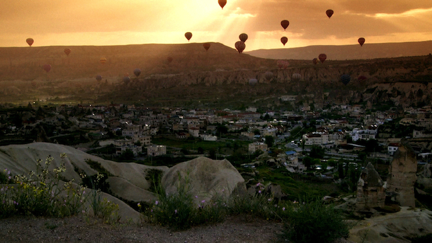
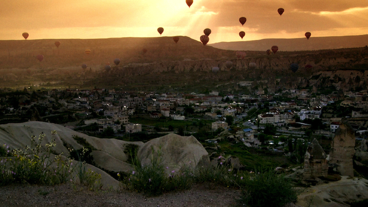
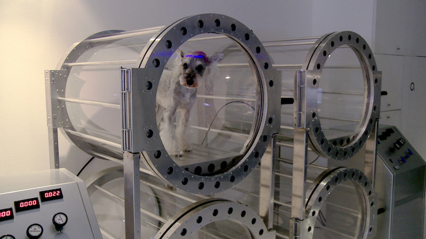
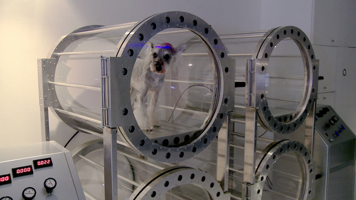

Global Home
As soon as filmmaker Eva Stotz found out about the Couchsurfing network, she had to know more. What was this online community providing a free place to sleep anywhere in the world, a chance look in on the lives of complete strangers, and an opportunity to reach out beyond the internet after only a few emails? Eva packed her camera and set off on her travels.
Team
The producers Karsten Aurich and Annedore von Donop of sabotage films (Berlin Calling, Ion Tichy Raumpilot, Global Player) produced this project. The music was composed by internationally known composer and musician Jürgen Grözinger (European Music Project, Orient-occident, Inside the dream) in collaboration with Joa Glasstetter.
Screenplay, Director, Camera:
Eva Stotz
Montage
Vincent Schmitt, Eva Stotz
Dramaturgy
Annedore v. Donop
Sound Mixer
Konstantin Kirilow, Johannes Schmelzer-Ziringer, Juri von Krause, Garip Özdem
Sound Design
Niklas Kammertöns (bvft)
Sound Re-Recording Mixer
Alex Leser
Original Score
Jürgen Grözinger & Joa Glasstetter
Grafics
Anna Niedhart
Commissioning Editor
Katharina Dufner
Producers
sabotage films, Karsten Aurich & Annedore von Donop
Co-Producer
GERMAN FILM AND TELEVISION ACADEMY BERLIN and ZDF – DAS KLEINE FERNSEHSPIEL
Supported by
MEDIENBOARD BERLIN-BRANDENBURG
Festivals & Awards
- Nomination Maverick Award Woodstock Film Festival Press
- Wordpremiere South by Southwest
- Nomination Cosmic Angel COSMIC CINE MÜNCHEN
- Official Selection Raindance Festival
- Official Selection 11th PLANETE DOC WARSAW
- Official Selection 28th DOKFEST MÜNCHEN
- Opening Film FILM WELT WIRTSCHAFT MÜNCHEN
- German Competition ACHTUNG BERLIN Festival
- Official Selection GERMAN FILMWEEK CAIRO
- Official Selection DOCFESTIVAL SAN FRANCISCO
- Official Selection MIDDLE EASTERN FILM FESTIVAL SOFIA
- Official Selection HIPTRIP FESTIVAL BUCHAREST
- Official Selection CROSSROAD FESTIVAL GRAZ
 

» A refreshing affirming approach to the digital world and globalisation «
(Rhythm Circus, London, Andy Wilson)
» ... thoughtful and provocative «
(Deutsche Presseagentur, Yilmazer)
» Eva Stotz constantly photographs what matters «
(Filmbalaya, San Francisco, Adam Cuttler)
» A vibrant, personalized way to see our global home. «
(Raindance London, Ballantyne)
 
